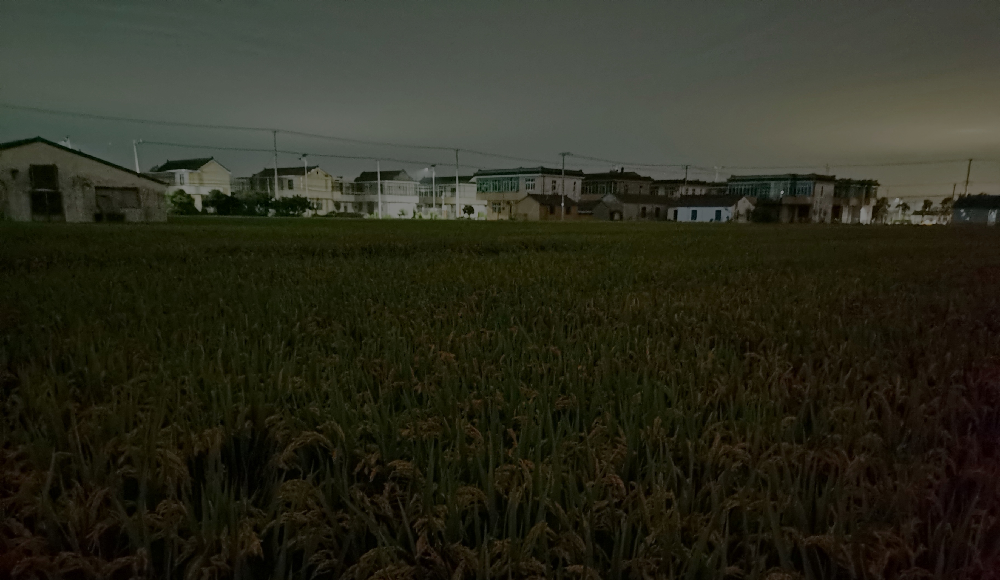

Pure Darkness
It gets dark early in the evening in the countryside. Although geographically speaking, the time for darkness to fall in cities and suburbs should be similar, here you will feel that darkness comes early.
When I go out for some fresh air after finishing dinner - it is before 7 o’clock - I suddenly encounter dense darkness, realizing that this is a very different experience. Although both Sichuan and Jiangsu provinces use Beijing time, there exists some difference in the actual time due to the gap in longitude and other factors. Besides, even though Shuangliu District is not as developed as the city center, it still faces light pollution that cannot be ignored. But in areas where scattered houses are surrounded by rice fields, it isn’t a concern. Therefore, being able to witness such peaceful and pure darkness at this time is precious. I regulate my daily routine based on the biological clock, so it’s cozy and relaxing as the daylight indicates “time for rest”.
Outside the courtyard, there are only several scattered sources of light, creating a stark contrast with the brightness inside the house. Moreover, with darkness comes silence, which make you feel as if the world is separated. Without many streetlights or any other light sources, even the familiar dirt road in the daytime seems unfamiliar, stretching into the unknown distance.

The pure darkness brings back my remote memories that my father took me on midnight adventures in the wilderness. All we have is a flashlight and a camera for equipment. Due to the minimal air pollution, the sky was clear and adorned with numerous stars. With a tripod set up, you could easily capture star trails. Aside from capturing the starry sky, you could also take photos of the pumping unit, commonly known as a “nodding donkey,” which still worked tirelessly in the dark night.